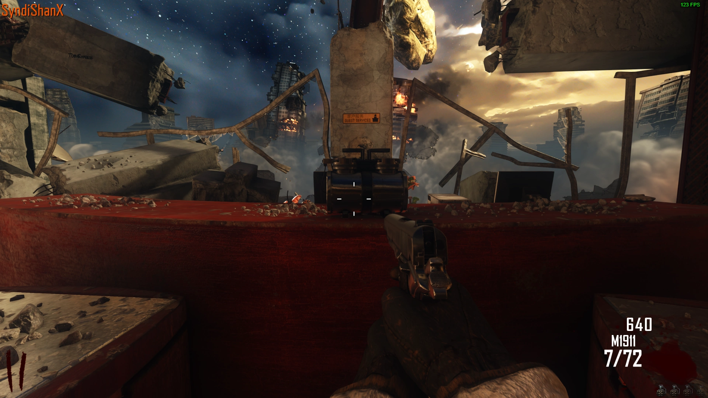
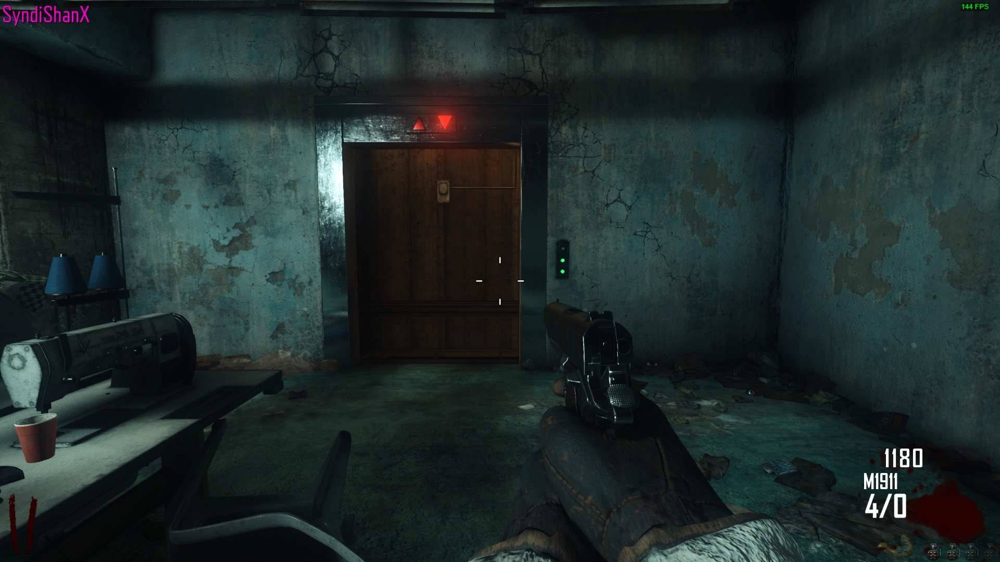
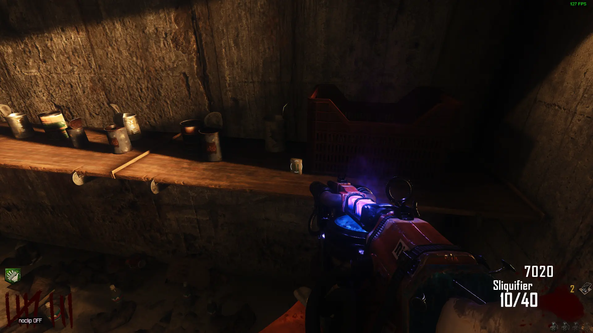

Easter Egg Songs
We All Fall Down - Kevin Sherwood
Interact with 3 Teddy Bears around the Map

Demon Speeding - Rob Zombie
Interact with 4 TVs around the Map


Thick & Handsome (BO3 Only)
Buy Who's Who, Quick Revive, and Juggernog
Free Perks
Get 100% Accuracy, Knife, or Tramplesteam all of the Jumping Jacks to get a Free Perk Powerup
Egg Roll Quest (BO3 Only)
Interact with the Cat Picture on the Shelf on the Bottom Floor of the Power Tower
Knife 3 Egg Rolls around the Map, Each one will Teleport 3 Times Each as fast as Possible, Pick it up the 3rd time you Knife it
Egg Roll 1
-In Spawn on the Table by the Desk
-On the Ledge by a Poster in the same Room as the Nav Card
-On a Broken Shelf near the SVU-AS Wall-buy
Egg Roll 2
-On a Shelf by the Hole in the Wall in the First Mystery Box Room
-On some Debris directly below the Entrance of the Large Elevator Shaft
-On the Ledge to the Left when entering the Buddha Room
Egg Roll 3
-On the White Chair in the Blue Mystery Box Room
-On a Table in the Sewing Room
-On the Counter in the Blue Kitchen
Go to the Kitchen on the Same Tower as the SVU-AS Wall-buy, and Make the Plate of Egg Rolls
Interact with the Plate? and Interact with the Cat Picture again to get a Free Perk
Upgradable Bowie Knife (BO3 Only)
Obtain the Galva Knuckles from the 23rd Floor of the Large Elevator Shaft
Melee the Power Switch with the Galva Knuckles and Quickly Ride the Elevator on the same Wall up to the Roof and buy the Bowie Knife on the way Up
Run back to Power as Fast as Possible and Melee the Power Switch with the Bowie Knife while the Panel is still Electrified
You can Retry if you are too Slow
Icy Tempest AAT (BO3 Only)
Complete a Jumping Jack Round without taking Damage
The Icy Tempest AAT Attachment will be in the same Room as the Nav Card
Free Pack-a-Punched Galil (BO3 Only)
Go to the Room with the Tramplesteam Buildable Table
Shoot the Lanterns above the Buildable Table in Order (1,4,3,5,2), You should hear a Sound
Knife the Name Colter on the Wall by the Elevator Button and the Galil Wall-buy will Appear
Free Special Dual Wield Five-Sevens (+50% Damage) (BO3 Only)
Pick up all 4 Black Ops Game Cases Around the Map
-Black Ops 1: On the Shelf in the Room at the Drop Down Area on the Roof
-Black Ops 2: On a Chair in the Hallway with the Remington 870 Wall-buy
-Black Ops 3: On a Shelf in the same Room as the Nav Card
-Black Ops 4: Under The Pillar in the Buddha Room
Interact with the Boarded Window by the Semtex Wall-buy on the Roof to Spawn a Soul Box
Kill 35 Zombies to Fill the Soul Box, then Interact with the Window again to get the Jake & Josh Pistols
Tramplesteam
Collect the Parts from the Spawn Room and First Door Room and Build it Downstairs at the Buildable Table

Nav Card Table (BO3 Only)
Collect the Parts and Build it at the Table on the Roof
Sliquifier
Collect the Parts and Build it at the Table in the Center of the Second Tower where Power is
Sliquifier Upgrade (BO3 Only)
Shoot the Sign on the Side of the Building on the same Floor as the SVU-AS Wall-buy 10 Times as Fast as Possible with the Sliquifier, you will hear a Sound when you Complete it
Shoot the 5 Green Canisters around the Map with the Sliquifier


You will be able to Pack-a-Punch the Sliquifier
PhD Flopper (BO3 Only)
Collect the Elevator Key from Either the Hallway after Dropping the Elevator in Spawn or the Rooms under the Roof


Insert the Key into all 8 Elevator Panels around the Map until you have the Golden Key



Insert the Key into the Elevator Panel at the End of the Hallway after Dropping the Elevator in Spawn
Ride the Elevator back up to Spawn and Repair the Elevator Controls
Drop the Elevator again to Access PhD Flopper
Main Quest
Setup
Build the Nav Table and Insert the Nav Card
All Players must stand on the Symbols on the Top of the Elevators at the Same Time (Only 1 if Playing Solo)
-The First Elevator coming from Spawn
-The Elevator in the Room Behind the Tramplesteam Buildable Table
-Next to the Power Switch in the Power Room
-Down the Stairs from the Roof
Once Completed, they will Glow
Activate the Symbols Scattered around the Map in Order (They will Glow if they are Stepped on at the Correct Order) (Only 1 if Playing Solo)
-Near the First Elevator coming from Spawn
-Down the Stairs and to the Right from the SVU-AS Wall-buy
-Near the AK-74U Wall-buy
-Near the Semtex Wall-buy on the Roof
Once Completed, You will Hear a Quote
Obtain the SVU-AS or any Sniper, then Shoot the Orbs out of the Dragon's Mouths on the roof
They will Fly to the Starting Room and Land under the Lions Feet
Choose either Richtofen's or Maxis' Side
Richtofen's Side
Obtain the Upgraded Sliquifier and Shoot the Orbs 10 Times Each until they will Spin
Each Player must Place a Tramplesteam on one of the 4 Zombie Symbols around the Map all Facing the Tower
-Left of the Stairs on the Roof
-Right of the Stairs on the Roof
-On the Walkway near the Semtex Wall-buy on the Roof
-Near the First Elevator coming from Spawn
Launch 16 Zombies into the Tower until the Tower turns Blue
Maxis' Side
Go into the Buddha Room, near the AN-94 Wall-buy
Kill 15 Zombies on the Lower Floor, Once Completed, You will Hear a Quote
(BO2 Only): Obtain the Pack-a-Punched Balistic Knife as Stu, and Revive Russman with the Balistic Knife in the Buddha Room
(BO3 Only): Obtain the Pack-a-Punched Balistic Knife and Shoot the Floor in the Center of the Buddha Room
Place a Tramplesteam on all 4 of the Lion Symbols around the Map all Facing the Tower
-In the Spawn Room
-At the Bottom of the Escalator from Spawn
-On the Roof near the 2 Elevators
-In the Drop Down Area on the Roof
Go to the Starting Room and Pick up the Orbs from under the Lions Feet
Place the Orbs on 2 of the Tramplesteams, so they launch back and forth (Spawn and at the Bottom of the Escalator)
Ending
Obtain the Galva Knuckles and Punch the Legs on the Tower in Order, you can Find the Order using the Majohng Tiles
You can figure out which Direction (North, South, East, or West) Corresponds with the Number Tiles by Matching the Colors
You then Punch the Legs in that order to Complete the Easter Egg
